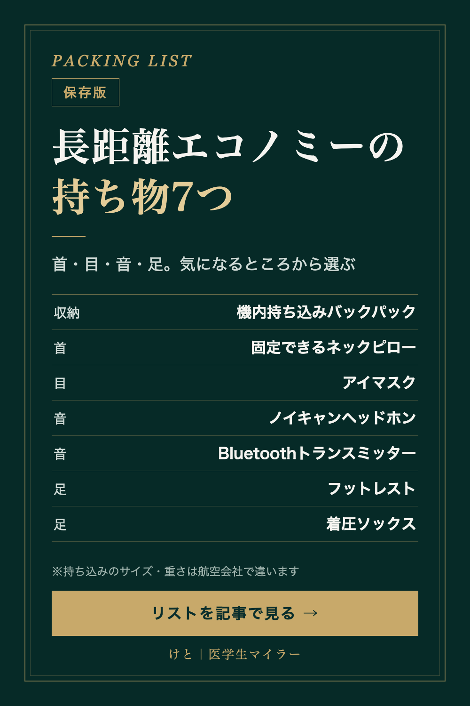

PACKING LIST
長距離エコノミーの持ち物7つ｜機内でモバイルバッテリーが使えなくなった後のリスト
2026/10/10 時点の情報
2026年4月24日から、機内でモバイルバッテリーを使うことが禁止になりました。長距離のエコノミーの持ち物は、ルールが変わるたびに見直しが必要です。12時間前後のエコノミーに乗るときの持ち物を7つ、ルールと一緒にまとめました。
※PR｜この記事には楽天ROOMの商品リンクがあります。リンクから購入されると、運営者に紹介報酬が入ります。商品は、使った感想ではなく、公式のルールと商品の仕様を見比べて選んでいます。

まず確認：モバイルバッテリーの新ルール（2026年4月24日〜）
国土交通省が発表した新しいルールです。
- 機内に持ち込めるモバイルバッテリーは2個まで（160Wh以下に限る）
- 機内でモバイルバッテリーを充電しない
- 機内でモバイルバッテリーからスマホなどを充電しない
- 預け荷物に入れることは、これまでどおり禁止
つまり「フライト中はモバイルバッテリーがあるから大丈夫」という考え方は、もう通用しません。機内でスマホを使いたい場合は、座席に電源（USBやコンセント）があるかを予約のときに確認しておくと安心です。座席の電源の有無は、航空会社や機材によって違います。
持っていくなら機内持ち込みの荷物に入れて2個まで。使うのは空港や旅行先に着いてからです。▶ Anker Power Bank 25000mAh（楽天ROOM）
前提：機内に持ち込める荷物のルール（ANA国際線の場合）
- 機内持ち込み手荷物1個：3辺の合計が115cm以内、かつ55cm×40cm×25cm以内
- 身の回り品1個：40cm×30cm×20cm以内（前の座席の下に入れる）
- 重さ：2個の合計で10kgまで
身の回り品は「前の座席の下」に入れます。エコノミーでは、ここがそのまま自分の足元のスペースになるので、足元のバッグに入れすぎると足を伸ばす場所がなくなります。
サイズや重さの上限は、航空会社や運賃の種類によって違います。LCCは特に厳しいことがあるので、乗る便の規定を必ず確認してください。
1. 機内持ち込みサイズのバックパック
フライト中に使うものを、1つのバッグにまとめておくためのものです。キャビンゼロの「クラシック 36L」は、販売ページの表記で幅31×高さ45×奥行20cm、重さ700g。ANA国際線の機内持ち込み手荷物のサイズ（55×40×25cm以内）に収まる寸法です。
2. 首を固定するネックピロー
エコノミーの座席は、リクライニングしても大きくは倒れません。cabeauの「TNE S3」は、左右のストラップで固定できるネックピローです。
3. アイマスク
長距離便では、消灯したあとも、まわりの座席のモニターや読書灯の光が入ってきます。suyameeのアイマスクは、遮光率99.99%とされている立体型です。
まわりの人の気配も気になる人には、フード付きのネックピロー（耳栓つき）もあります。▶ フード付きネックピロー（楽天ROOM）
4. ノイズキャンセリングのヘッドホン
機内では、エンジンの音がずっと続きます。ソニーの「WH-CH720N」は、上位モデルより手頃な価格帯の、ノイズキャンセリング対応のワイヤレスヘッドホンです。
5. Bluetoothトランスミッター
見落としがちなポイントです。座席のモニターに有線のイヤホン端子しかない機材では、ワイヤレスのイヤホンやヘッドホンはそのままではつながりません。Bluetoothトランスミッターを座席のイヤホン端子（3.5mm）に挿すと、手持ちのワイヤレスイヤホンで機内エンタメの音を聴けるようになります。
6. 足を乗せるフットレスト
空気で膨らませるタイプのフットレストなら、使わないときは小さくたためます。足元の広さは座席の列や機材によって違い、こうした道具を使えるかどうかも航空会社によって扱いが違うことがあります。気になる場合は、乗る前に航空会社に確認してください。
7. 着圧ソックス（と、足を動かすこと）
長時間、足を動かさずに同じ姿勢でいると、いわゆるエコノミークラス症候群（深部静脈血栓症・肺塞栓症）の危険があります。厚生労働省の資料では、予防のために次のことが挙げられています。
- 足や足の指を、こまめに動かす
- 1時間に1度は、かかとの上下運動（20〜30回程度）をする
- 歩く（3〜5分程度）
- 適度な水分を取る
一番大事なのは、道具よりも足を動かすことです。そのうえで、脚のむくみ対策として着圧ソックスを使う方法もあります。こまめに歩きたい人は、通路側の席を選ぶと、隣の人に声をかけずに立てます。
まとめ
全部そろえる必要はありません。「眠れない」「音がつらい」「足がむくむ」など、自分が気になるところから選んでみてください。
紹介した商品は、楽天ROOMにまとめています。▶ けと｜医学生マイラーの楽天ROOM